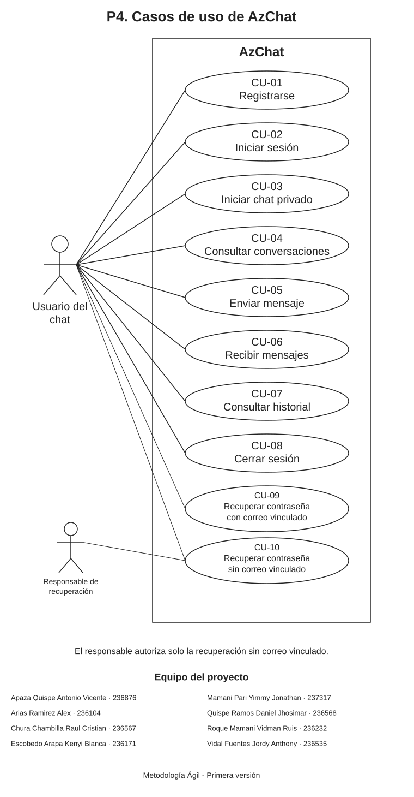

Paso 4 de 12 · Casos de uso
Las acciones de cada persona
Cómo se relacionan las personas con la aplicación.
Casos de uso en contexto
| Caso | Recorrido y resultado |
|---|---|
| Preparar una entrega | Una persona abre el chat de su equipo, adjunta el avance y responde a una observación. El intercambio queda en el historial del grupo. |
| Organizar un grupo | Su administrador incorpora o retira miembros. Si desea salir, debe dejar otro administrador cuando aún quedan participantes. |
| Personalizar un contacto | Una persona guarda un nombre que le resulta fácil reconocer. El perfil original y la vista de las demás cuentas se mantienen. |
| CU-09 · Recuperar contraseña con correo vinculado | Se propone comprobar el correo previamente verificado mediante un código y permitir que la persona establezca una nueva contraseña. |
| CU-10 · Recuperar contraseña sin correo vinculado | La persona propone un correo nuevo. El responsable deberá revisar y autorizar la solicitud antes de que se pueda verificar ese correo y restablecer la contraseña. |
CU-09 · Con correo vinculado
Actor: persona que olvidó su contraseña. Condición previa: la cuenta deberá tener un correo de recuperación ya verificado.
- Seleccionará «Olvidé mi contraseña» e indicará su usuario o código de estudiante y el correo vinculado.
- Revisará la cuenta y el correo en la previsualización y confirmará la solicitud.
- El sistema enviará un código al correo registrado; la persona lo introducirá para demostrar que puede acceder a él.
- Si el código es válido, escribirá la nueva contraseña y su confirmación.
- Confirmará el cambio. El sistema deberá invalidar el código y las sesiones anteriores y solicitar un nuevo ingreso.
Resultado esperado: la cuenta conservará su correo vinculado y podrá utilizarse con la nueva contraseña. No se requerirá una aprobación administrativa para este recorrido.
CU-10 · Sin correo vinculado
Actores: persona que solicita recuperar el acceso y responsable de autorizar la recuperación. Condición previa: la persona deberá disponer de un correo al que pueda acceder, aunque todavía no esté asociado a la cuenta.
- Indicará la cuenta y propondrá el correo que desea vincular. Revisará los datos y confirmará el envío de la solicitud.
- El sistema enviará al responsable un correo para revisar la solicitud; mientras tanto, la recuperación quedará pendiente.
- El responsable comprobará la identidad por un medio conocido y abrirá la previsualización. Para aprobar deberá revisar los datos y confirmar expresamente su decisión en una segunda confirmación.
- Solo después de la aprobación, la persona podrá solicitar un código en el correo propuesto.
- La persona verificará el código y escribirá y confirmará una nueva contraseña.
- Al confirmar el cambio, el sistema deberá vincular el correo verificado, invalidar los permisos utilizados y cerrar las sesiones anteriores.
Resultado esperado: acceso recuperado y correo vinculado únicamente después de la autorización y la prueba de posesión del correo. Abrir el enlace de revisión o aprobar la solicitud no deberá cambiar por sí solo la contraseña.
Alternativas y errores previstos
- Correo diferente o inaccesible: si no se puede usar el correo ya asociado, deberá aplicarse el recorrido de autorización de CU-10 para proponer otro.
- Sin acceso a ningún correo: la recuperación no podrá completarse por este medio; no se deberá omitir la verificación.
- Solicitud rechazada o vencida: no se habilitará el correo propuesto ni se modificará la contraseña.
- Código incorrecto, vencido o consumido: el sistema deberá explicar el error y permitir solicitar otro cuando corresponda.
- Cancelación o fallo de entrega: se mantendrá la contraseña anterior. La aplicación no deberá presentar un envío fallido como exitoso.
Los límites de códigos, intentos y tiempos se especifican en P5 · Reglas del chat.
Qué representa un caso de uso
Describe un objetivo de la persona y el resultado que obtiene. La lista de funciones pertenece al catálogo; aquí se muestra cómo se combinan para completar una tarea.
Diagrama del diseño


Ampliar diagrama